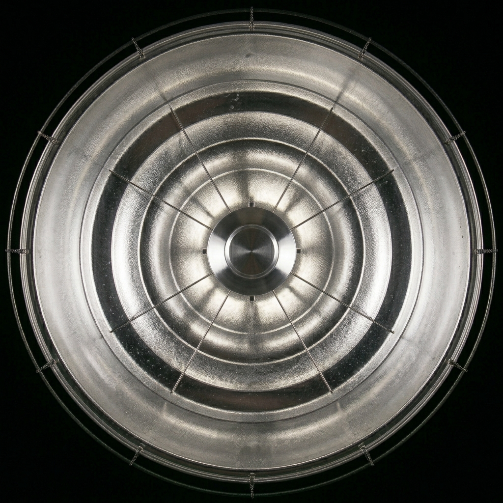
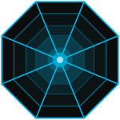
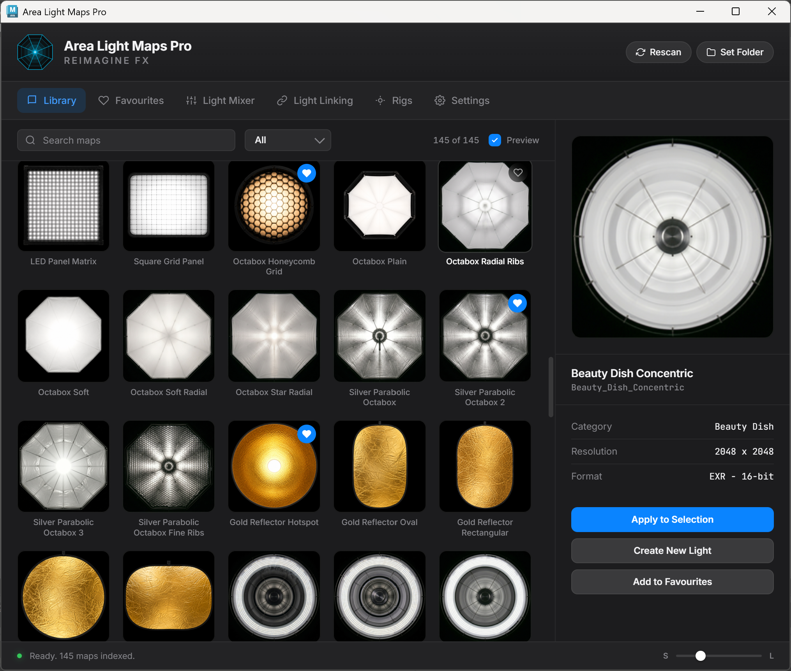
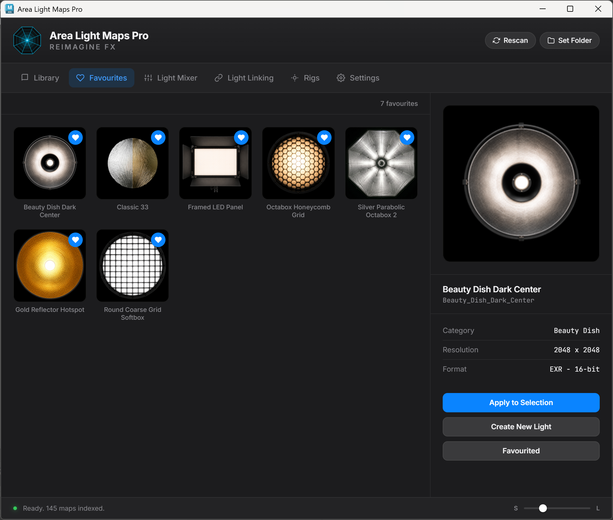
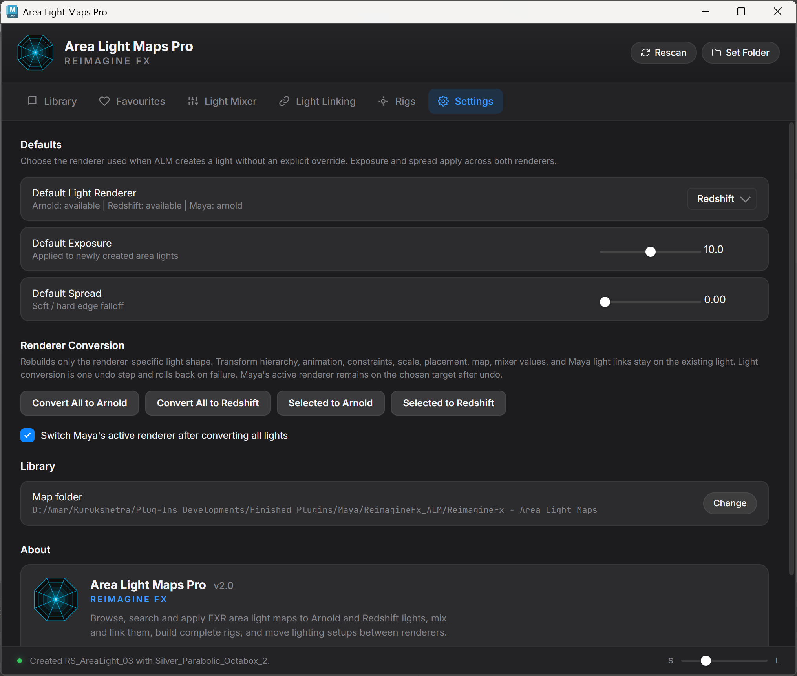
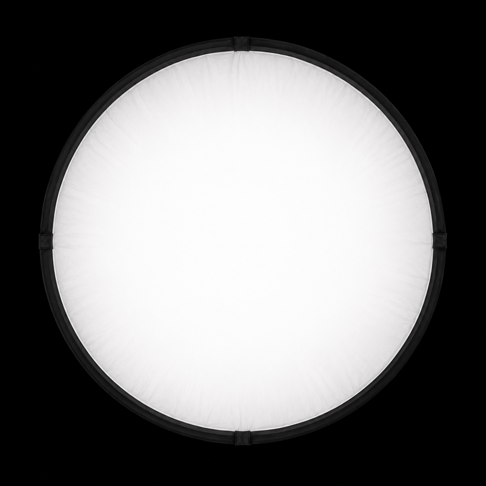

Area Light Maps Pro
04 / 08
Light Mixer
TWO RENDERERS.
ONE MIXER.
Exposure, Kelvin temperature, tint, maps, mute, and solo stay close to the shot.




Reimagine FxBuild reflections and highlights with a mapped area-light workflow for Arnold and Redshift.
Search, filter, preview, apply, or create a mapped light from one panel.

Build a short list for the lighting patterns that earn a place in the next shot.

Exposure, Kelvin temperature, tint, maps, mute, and solo stay close to the shot.
Link a light to the selected geometry, or return it to the full scene.


Five rigs, camera placement, object aiming, reflection placement, and saved presets.

Convert all ALM lights or only the selected lights between Arnold and Redshift.


Browse, mix, link, rig, place, save, and convert from one Maya panel.
The mapped area-light workflow for Arnold and Redshift.
145 mapped light patterns and one area-light workflow for Arnold and Redshift.
Search, filter, preview, apply, or create a mapped light without leaving the panel.
Build a working set for the lighting patterns you want in reach.
Exposure, Kelvin temperature, tint, maps, mute, and solo.
Choose the selected geometry, or return the light to the full scene.
Five rigs, camera placement, object aiming, reflection placement, and saved presets.
Convert all lights or only the selection between Arnold and Redshift.
Maya 2026 / Arnold + Redshift / 145 EXR maps
145 EXR light maps for Maya area lights.